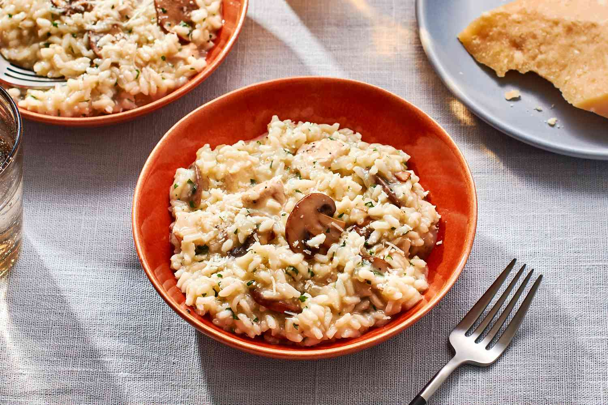

Risotto

Description
Il risotto è un primo piatto tipico della cucina italiana, originario dell'Italia settentrionale, in particolare Lombardia, Veneto e Piemonte e poi diffusosi in numerose versioni in tutto il paese.
La sua caratteristica principale è il mantenimento dell'amido, che, gelatinizzatosi a causa della cottura, lega i chicchi tra loro in un composto di tipo cremoso. Tra le varie qualità di riso, ne esistono alcune particolarmente adatte alla preparazione del risotto (Arborio, Baldo, Carnaroli, Maratelli, Razza 77, Rosa Marchetti, Vialone Nano). Gli altri ingredienti variano in relazione alla ricetta da preparare.
Ingredients
- 300 g di riso per risotti
- 1 cipolla
- 1 spicchio d'aglio
- 300 ml di vino bianco
- 1l di Brodo di verdura Intenso
- 150g di parmigiano gratinato
Steps
- Pelare cipolla e aglio, tagliare a dadini e rosolare il tutto in una padella con burro e olio d'oliva, fino a raggiungere una consistenza trasparente e un buon profumo. Il nostro consiglio: affinché la cipolla e l'aglio diffondano tutto il loro aroma, fare rosolare lentamente a fuoco medio.
- Aggiungere il riso per risotto, mescolare energicamente e dopo circa 2-3 minuti sfumare con vino bianco e una parte del brodo caldo. Il liquido deve coprire completamente il riso.
- Mescolare regolarmente il risotto e aggiungere un po' alla volta il brodo caldo, in modo che il riso assorba al meglio la parte liquida e si ottenga un risotto cremoso. Dopo 15-20 minuti il risotto sarà cotto al dente.
- Alla fine insaporire con sale, pepe e parmigiano grattugiato, quindi guarnire con del cerfoglio tritato finemente. Completare il risotto con funghi rosolati, zafferano, pomodori, asparagi o erbe aromatiche.